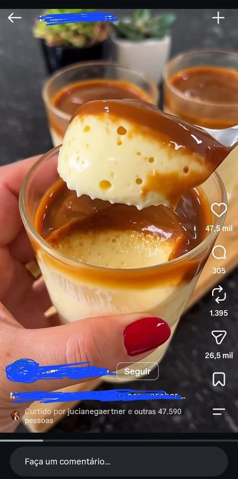
As receitas que você salvou pra fazer “um dia”. Agora, num livro só seu.
Abra seu livro e encontre, num só lugar, as receitas completas que recuperarmos dos seus Salvos, com foto, ingredientes e preparo. A seleção ganha novas receitas no seu estilo até chegar a 200 receitas.
Quero meu livro por R$ 37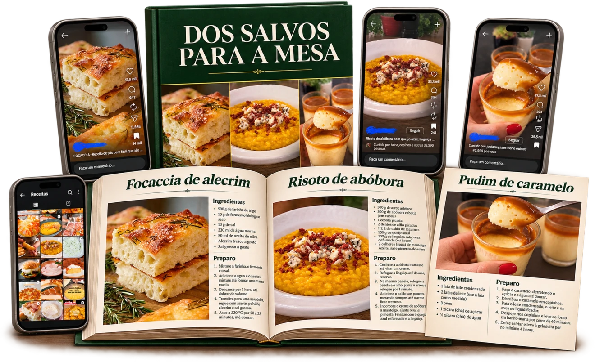
Você vive salvando receitas e quase nunca faz nenhuma?
Quando você salvou aquela focaccia dourada, já deu vontade de fazer. Aí chega a hora de cozinhar e você precisa achar o Reel de novo, pausar pra ver as medidas e procurar o tempo de forno na legenda.
Com o livro aberto no celular, você vê o que precisa comprar, quanto usar, como preparar e quantas pessoas serve. Veja o post que você salvou virar uma página do livro, com a foto e a receita juntas.
Ver uma página do livroDos Salvos para a Mesa
Pudim de caramelo
6 porções
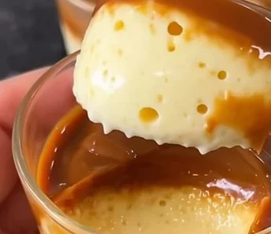
Ingredientes
- 395 g de leite condensado
- 400 ml de leite
- 3 ovos
- 100 g de açúcar para a calda
Modo de preparo
- Faça um caramelo com o açúcar e distribua em ramequins próprios para forno.
- Misture o leite condensado, o leite e os ovos e despeje sobre a calda.
- Asse em banho-maria a 160 °C até firmar, cerca de 40–50 min.
- Gele por 4 horas.
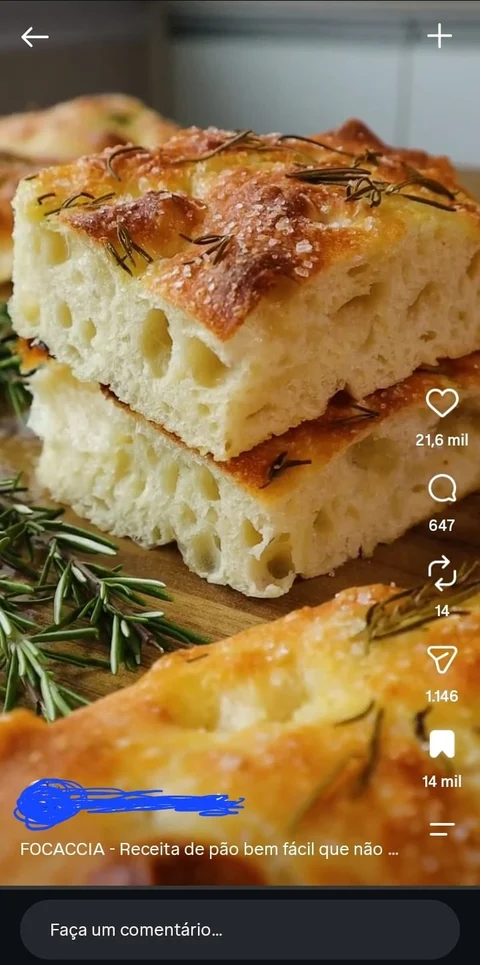
Focaccia
Dos Salvos para a Mesa
Focaccia
8 pedaços · Assadeira de 23 × 33 cm
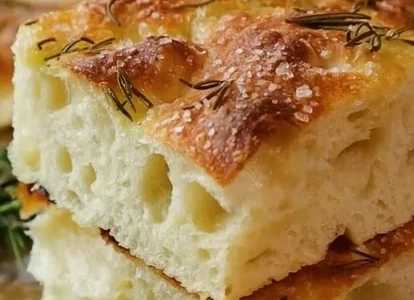
Ingredientes
- 500 g de farinha, 400 ml de água, 7 g de fermento biológico seco, 10 g de sal, 45 ml de azeite e alecrim a gosto
Modo de preparo
- Misture a massa.
- Faça três dobras, com 15 min entre elas.
- Deixe crescer até quase dobrar.
- Espalhe na forma untada, espere 30 min, marque com os dedos e finalize com azeite e alecrim.
- Asse a 220 °C por 22 a 28 min.
Pão de hambúrguer
Dos Salvos para a Mesa
Pão de hambúrguer
8 pães
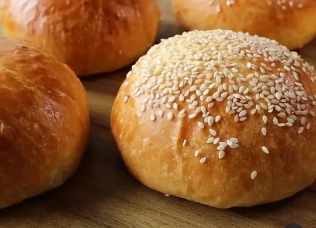
Ingredientes
- 500 g de farinha, 240 ml de leite, 1 ovo, 40 g de manteiga, 25 g de açúcar, 5 g de sal, 7 g de fermento biológico seco, gema e gergelim
Modo de preparo
- Misture e sove.
- Deixe dobrar de volume, modele 8 pães e espere crescer de novo.
- Pincele com gema, salpique gergelim e asse a 180 °C por 20 a 25 min.
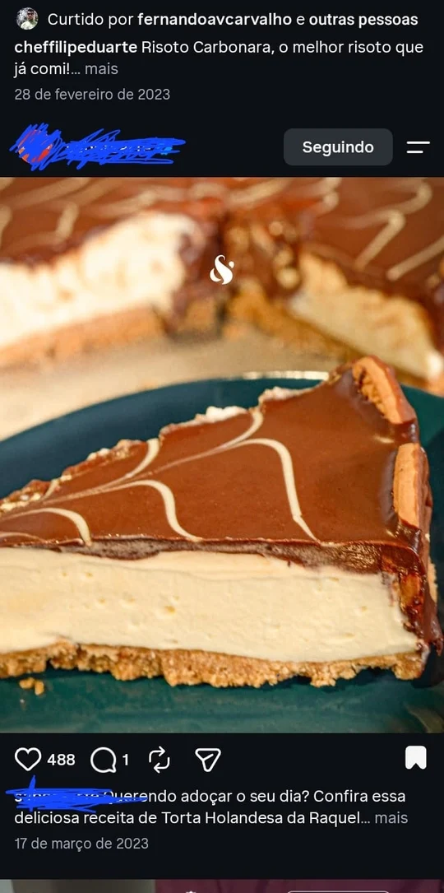
Torta holandesa
Dos Salvos para a Mesa
Torta holandesa
10 fatias
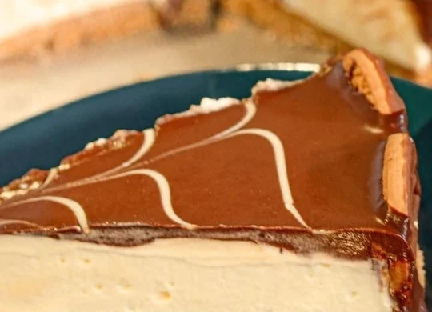
Ingredientes
- 200 g de biscoito maisena, 90 g de manteiga, 300 g de cream cheese, 200 g de creme de leite fresco, 80 g de açúcar, 150 g de chocolate e 100 g de creme de leite
Modo de preparo
- Pressione o biscoito triturado com manteiga na forma.
- Bata o cream cheese com açúcar e incorpore o creme fresco batido.
- Espalhe sobre a base e gele até firmar.
- Cubra com chocolate derretido misturado ao creme de leite.
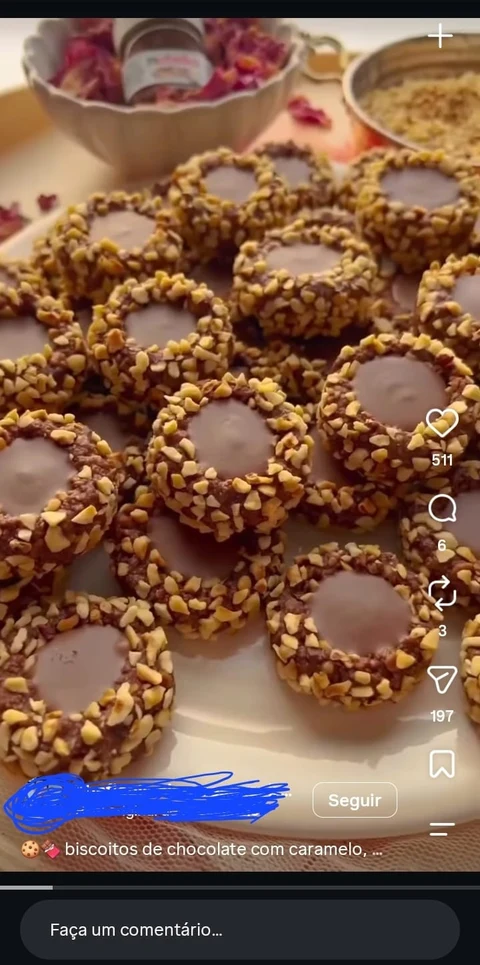
Biscoitos de chocolate com caramelo
Dos Salvos para a Mesa
Biscoitos de chocolate com caramelo
18 biscoitos
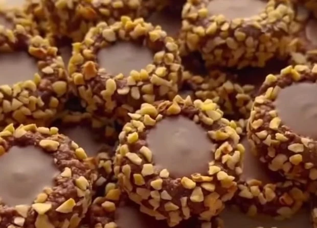
Ingredientes
- 120 g de manteiga
- 80 g de açúcar
- 150 g de farinha
- 25 g de cacau
- 70 g de castanhas picadas
- 100 g de caramelo espesso
Modo de preparo
- Bata a manteiga com o açúcar e misture a farinha e o cacau.
- Modele, passe as bordas nas castanhas e faça uma cavidade.
- Asse a 180 °C por 12–15 min.
- Deixe esfriar e recheie com caramelo.
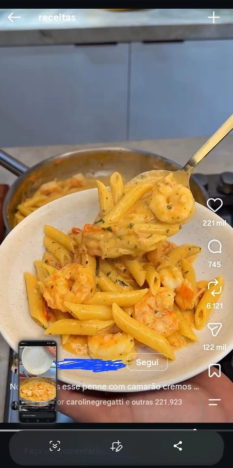
Penne cremoso com camarão
Dos Salvos para a Mesa
Penne cremoso com camarão
4 porções
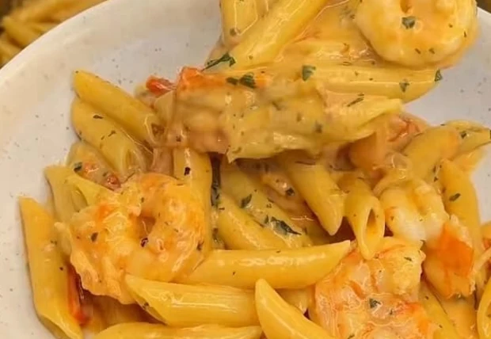
Ingredientes
- 300 g de penne
- 400 g de camarão limpo
- 2 dentes de alho
- 200 g de creme de leite
- 2 colheres de extrato de tomate
- azeite e sal
Modo de preparo
- Cozinhe a massa e reserve um pouco da água.
- Salteie os camarões com alho e azeite até ficarem opacos.
- Junte extrato e creme de leite.
- Misture o penne e ajuste o molho com a água reservada.
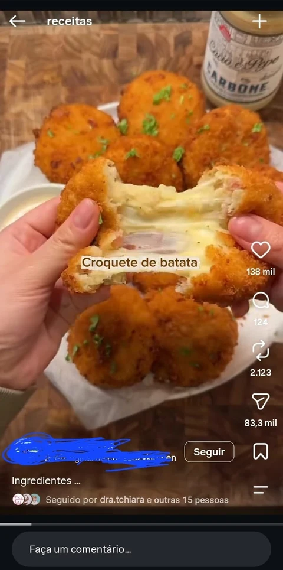
Croquete de batata
Dos Salvos para a Mesa
Croquete de batata
12 unidades
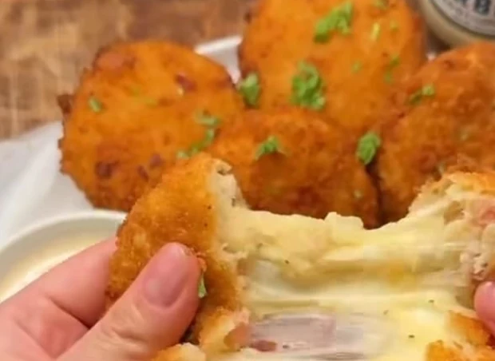
Ingredientes
- 500 g de batata
- 30 g de amido de milho
- 120 g de muçarela
- 1 ovo
- 80 g de farinha panko
- sal e óleo
Modo de preparo
- Cozinhe e amasse a batata.
- Misture o amido e o sal.
- Modele os croquetes com muçarela no centro.
- Passe em ovo batido e panko.
- Frite em óleo quente até dourar e escorra.
Gratinado de batata com bacon
Dos Salvos para a Mesa
Gratinado de batata com bacon
4 porções
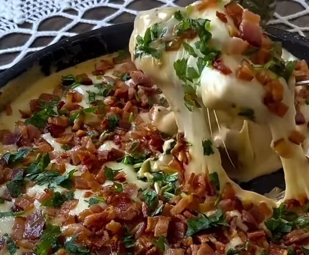
Ingredientes
- 600 g de batata
- 200 g de creme de leite
- 150 g de muçarela
- 100 g de bacon
- sal e salsinha
Modo de preparo
- Cozinhe as batatas fatiadas até ficarem quase macias.
- Monte camadas de batata, creme e muçarela.
- Leve ao forno a 200 °C até gratinar e finalize com bacon dourado e salsinha.
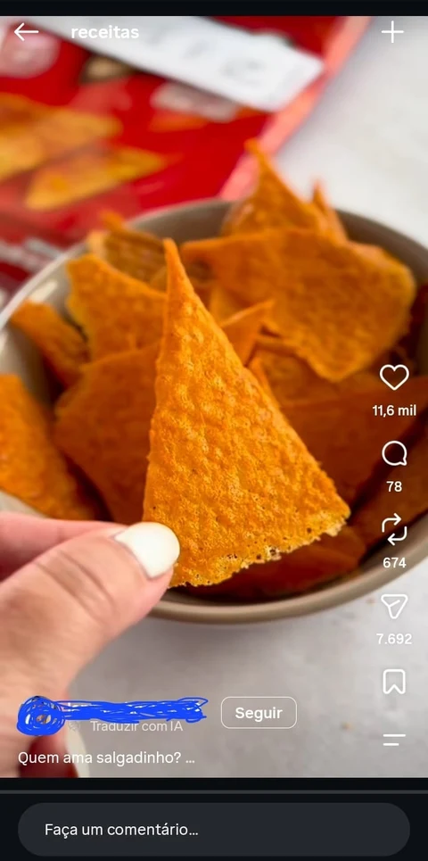
Chips crocantes de milho
Dos Salvos para a Mesa
Chips crocantes de milho
4 porções
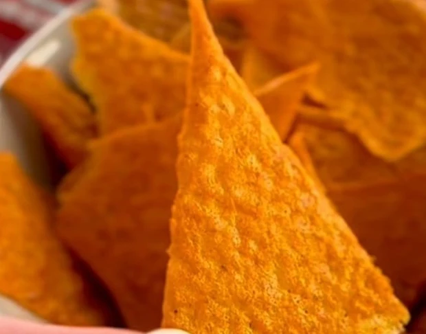
Ingredientes
- 6 tortilhas de milho
- 1 colher de azeite
- 1 colher (chá) de páprica
- sal a gosto
Modo de preparo
- Corte em triângulos, pincele com azeite e tempere.
- Distribua em camada única e asse a 190 °C por 8–12 min, virando na metade.
- Deixe esfriar para ficar crocante.
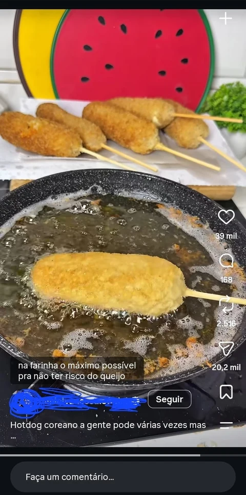
Hot dog coreano
Dos Salvos para a Mesa
Hot dog coreano
6 unidades
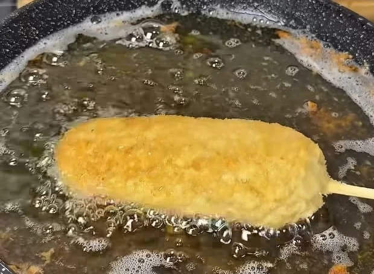
Ingredientes
- 3 salsichas
- 180 g de muçarela firme
- 160 g de farinha
- 1 ovo
- 120 ml de leite
- 1 colher (chá) de fermento químico
- panko e óleo
Modo de preparo
- Monte palitos com salsicha e queijo.
- Bata a farinha, o ovo, o leite e o fermento para fazer uma massa espessa.
- Cubra os palitos, passe no panko e frite até dourar e aquecer por dentro.
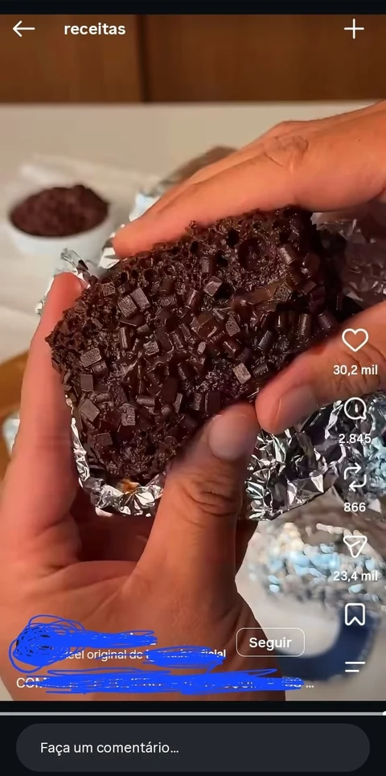
Bolo de chocolate com granulado
Dos Salvos para a Mesa
Bolo de chocolate com granulado
12 pedaços
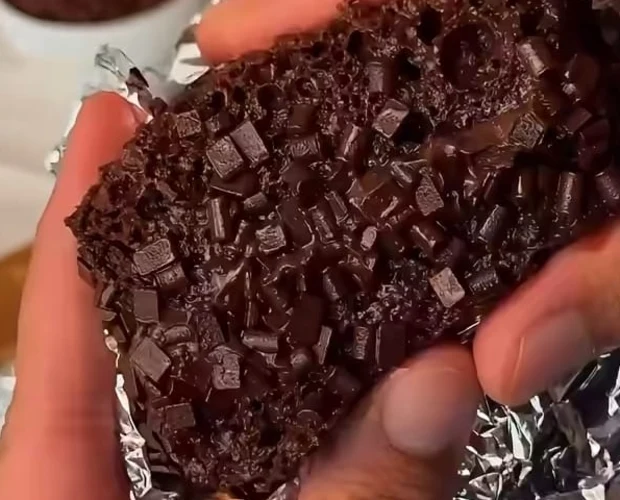
Ingredientes
- 3 ovos
- 180 g de açúcar
- 120 ml de óleo
- 200 ml de leite
- 220 g de farinha
- 45 g de cacau
- 12 g de fermento
- 150 g de chocolate, 100 g de creme de leite e granulado
Modo de preparo
- Misture ovos, açúcar, óleo e leite.
- Incorpore a farinha, o cacau e o fermento.
- Asse a 180 °C por 30–35 min.
- Cubra com o chocolate derretido misturado ao creme de leite e finalize com granulado.
Veja como é simples criar seu livro
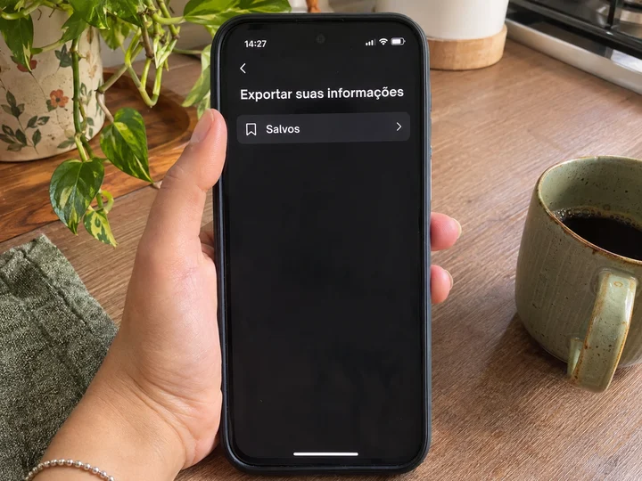
Baixe seus Salvos
Depois da compra, um vídeo curto mostra como baixar o arquivo pelo Instagram.
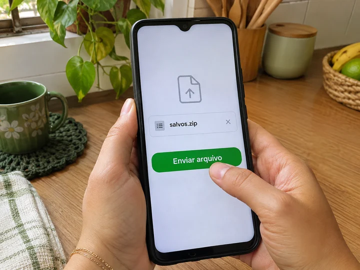
Envie um único arquivo
Suba o arquivo e marque o que você mais gosta de cozinhar. Basta enviar os Salvos.
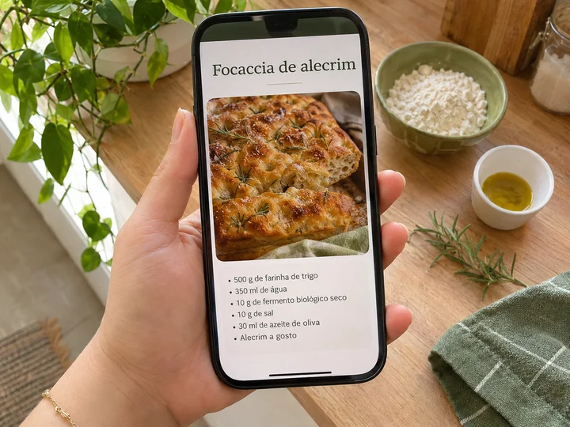
Receba seu livro
Quando o PDF estiver pronto, o link chega por e-mail. Abra no celular sempre que quiser cozinhar.
Telas ilustrativas das três etapas.
3 bônus montados com as receitas do seu livro
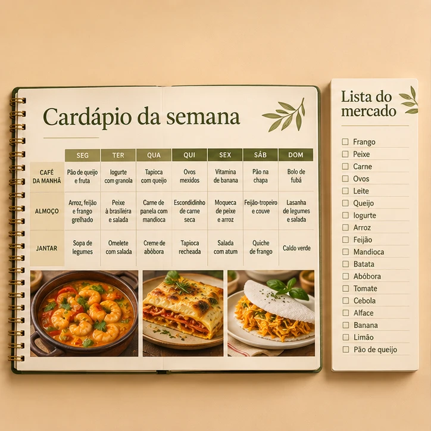
Seu cardápio com lista de compras
Uma semana montada com receitas do seu livro. Os ingredientes repetidos já vêm somados em uma lista por seção do mercado.
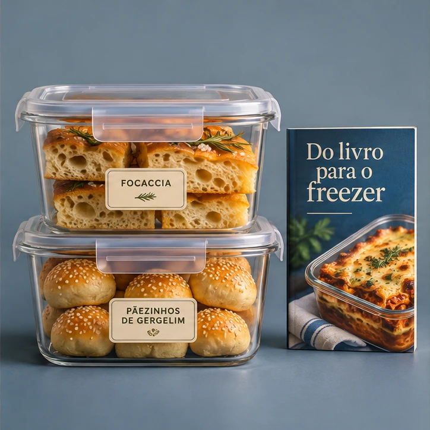
Do livro para o freezer
Descubra quais receitas do seu livro você pode fazer em quantidade e congelar. Veja como dividir, embalar e aquecer cada uma na hora de servir.
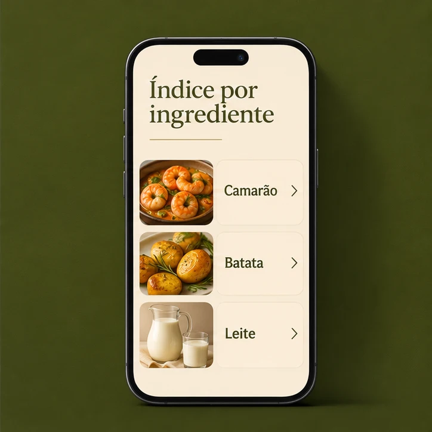
Índice por ingrediente
Comece pelo que já tem na geladeira. O índice clicável leva direto às receitas do seu livro que levam aquele ingrediente.
Suas receitas favoritas à mão, sempre que der vontade de cozinhar.
Reúna as receitas completas que recuperarmos dos seus Salvos e descubra outras no seu estilo, até completar um livro de 200 receitas.
Seu livro digital + 3 bônus
R$ 37
Pagamento único. Sem mensalidade.
- 200 receitas personalizadas
- Fotos, ingredientes, preparo e rendimento
- Cardápio com lista de compras
- Guia Do livro para o freezer
- Índice clicável por ingrediente
Depois da compra, envie o arquivo dos Salvos. Você recebe o link do PDF por e-mail.
Dúvidas antes de comprar
Preciso passar minha senha do Instagram?
Você só envia o arquivo dos Salvos que baixou no próprio Instagram. O vídeo mostra como pedir apenas esse arquivo.
As 200 receitas saem dos meus Salvos?
O livro reúne as receitas completas que conseguirmos recuperar. As vagas restantes são preenchidas com receitas selecionadas para o seu gosto.
E se um Reel estiver apagado ou a receita estiver incompleta?
Uma publicação indisponível ou sem as informações necessárias pode dar lugar a uma sugestão que combine com você.
E se o Instagram demorar para liberar o arquivo?
Use o link recebido após a compra para voltar e enviar o arquivo assim que o Instagram liberar o download.
O livro é impresso?
Você recebe um PDF para abrir no celular, tablet ou computador. Pode imprimir as páginas que quiser.